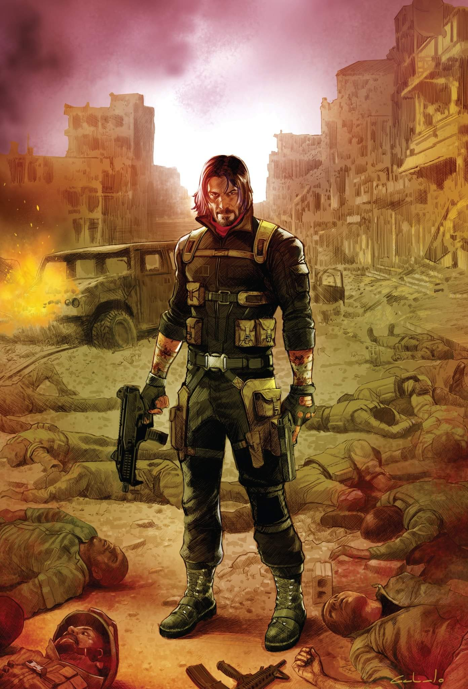
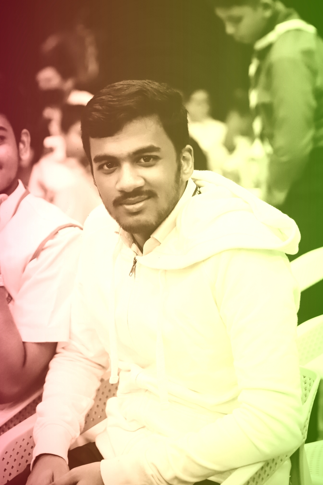

Hello my dear visitor I am Simanta Saha Sarob. Currently studying at Chittagong Port College department of science 12th standard. I am an ameture astronomer who loves night sky more then anything. With a huge pressure of my academic study, sometime I write about night sky, creatures of ocean, mathematics, physics and so on. Basically I'm not a professional writer. But writing is my hobby. I enjoy writing. With my articles you will find some books, movie reviews. So why are you waiting for? Surf my site 😉❤️. Contact.
I'm quite comfortable with writing astronomical topics cause I have been studying this subject more then three years in a row and I can explain this topics very easily. But I usually don’t write because it takes a huge time to make a perfect and resourceful article and you might know that as a full time student I have to give my maximum time to my study. Some time ago I wrote some articles about ocean creature, more specifically that was about sharks. Like Pocket sharks, Zebra sharks, Bull sharks and so on. I have a huge interest in evolution. But I never tried writing about it. I love chemistry. I am thinking about to writeing some stuff about chemistry. Another thing to clear that still now I wrote those stuffs in Bengali language. Yeah...that's for now. If you are quite interested to read my articles just click. Enjoy my friend.

I love books. Books makes me happy. Whenever I feel low I just pick a book and start reading. The genres of books that I like most are thriller, science fiction, science, murder mystery, horror but not dark horror though. I hate genres like dark horror, fantasy etc. If you tell me to pick one single genre which I love most, I will go with thriller. Crime thriller is the best. No matter how bad, sad, demotivated or angry I feel...crime thriller always makes my mood lighten up for the day. If I happen to come across a good book then I strongly recommend my friends to read that book. As I mentioned in the article section that I studied astronomy for many years; for that I have been through some foreign books to gain knowledge. I think we all know that there's a shortage of resources written in Bengali language. Most of them are from text books and a very little pop science. Reading text books aren't that significant but when you need to get crystal clear knowledge about any topic then you have no choice but to ended up with text books. Also I read so many comics, graphic novel, manga etc. So, if you are quite interested to get some clear idea about books or get some suggestions you can visit Book Review page.

Who doesn't like movies? Everyone likes movies from adults to children. Cinema is a modified permanent form of cinema or drama. And drama is the oldest branch of literature. Cinema industry is very old. It will be almost a hundred years. There is quite a difference between the movies of the previous era and the movies of the present era. The movies of the previous era were good for that time. We may not like the movies of the present time. But the movies after the seventies of the last century were quite good. Satyajit Ray's movies are the best of the best. He kept an eye on every detail in his movies. For example, the color of the wall, where the newspaper will be on the tea table, where the tea cup will be, etc. Uttam Kumar, Suchitra Sen, Soumitra's performances are thousand times better than many actors of today. Among the foreign movies, the ones that are very good usually come to the attention of the movie buffs of our subcontinent. Thus we usually get good movie suggestions from them. Cause every movie not get famous. There are many genres in movies. As you know in the book review section, I love thrillers here as well. But apart from thrillers, sometimes other genres of movies are seen. Web series is also my favorite. But I usually watch less web series as it takes lots of time to finish web series. That's all for now. Wish you guys will enjoy my Movie Review. Sorry to say but I will wrote the reviews in Bangali language. I will translate them into English very soon. So, stay tuned.
This section has been created to store my other writings. I made this for writing stories or memories. You can also read them if you want. Click here.

If you want to contact with me, you can use Facebook to send me a message.Or you can also use E-mail. Whenever I get free, I will send my response ❤️.